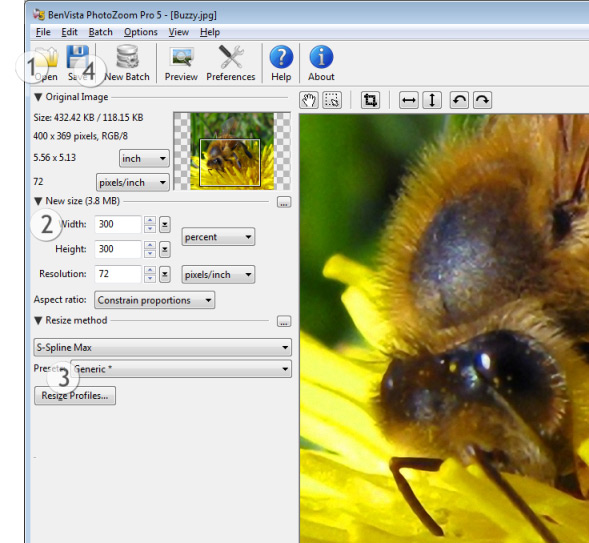

Início rápido
Uma breve introdução para familiarizá-lo através de poucos e simples passos:

Os números na imagem acima indicam onde cada um do seguintes procedimentos deve ser executado.
- Clique em Abrir e selecione a imagem que deseja redimensionar "Open" =========>"Abrir"
- Preencha o campo com o novo tamanho (em pixels, porcentagem, ou centímetros / polegadas, de acordo com a sua preferência) "Pixels" ===========> "Pixels" "Percentage" ===========> "Porcentagem" "Centimeters" ===============> "Centímetros" "Inches" ===================> "Polegadas"
- Selecione o método de redimensionamento que deseja utilizar, ou deixe-o na configuração padrão*
- Clique em Salvar, especifique um nome para o arquivo e aguarde até que o processo esteja concluído
Concluído!
* A configuração padrão (Parâmetro preestabelecido padrão e Genérico do S-Spline Max) propicia ótimos resultados na maior parte dos casos, porém os valores ideais podem variar de imagem para imagem. A efetuar o ajuste fino das configurações, ou escolher uma técnica ou parâmetro preestabelecido de redimensionamento diferente (como a S-Spline XL ou S-Spline), as eventuais diferenças podem ser vistas na janela de Pre-visualização.
 Caso tenha muitas imagens para redimensionar, você poderá processar todas de uma só vez através do Processamento em lotes "Batch processing" ==>"Processamento em lotes"
Caso tenha muitas imagens para redimensionar, você poderá processar todas de uma só vez através do Processamento em lotes "Batch processing" ==>"Processamento em lotes"
Para dicas e informações sobre como fazer o ajuste fino de seu método de redimensionamento, consultar o capítulo Ajuste Fino "Fine-tuning" =============> "Ajuste Fino"